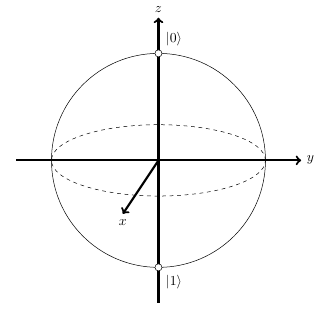
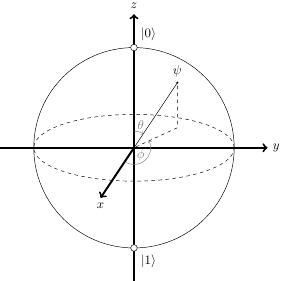

When learning the basics of quantum computing, the Bloch sphere comes early on as a visualization technique of quantum states. It shows the state of a single qubit as a point on this sphere:
This post explains how the Bloch sphere works and also why it works.
Mapping 4 dimensions onto a sphere
We have a qubit in an arbitrary state:
How can we visualize this state?
Had a and b been real numbers, it would have been easy since there would only be two dimensions (degrees of freedom). However, in reality , making our visualization task much more challenging because there are now 4 dimensions (two for each complex number). The Bloch sphere is a clever mapping from this 4D reality into something we can visualize.
We start by representing each of the complex coefficients using their polar representation, where the magnitudes and angles are real numbers:
Therefore:
Since a global phase doesn't affect the observable properties of a qubit (see the appendix for more on this), we can multiply this state by the global state to get [1]:
There's only a single angle in this equation: ; this is the relative phase between the two components of the state. Let's call it just , and then:
We're down from 4 real parameters to 3. But there's still a constraint on our state equation that we didn't use; all quantum states must be normalized - the amplitudes must satisfy:
In our case:
To proceed from here, we'll rewrite the second magnitude using the cartesian representation of complex numbers (instead of parameters and , we'll use x and y) and do some algebra:
If we rename to z, this equation should look familiar:
This is the equation of a unit sphere! We can now use spherical coordinates to express:
Where  is the angle from the positive z axis ("polar angle") and
is the angle from the positive x axis ("azimuthal angle"):
is the angle from the positive z axis ("polar angle") and
is the angle from the positive x axis ("azimuthal angle"):
If you recall, we expressed a in our quantum state as z and b as . Substituting back into the state equation:
We're now down to just 2 real parameters: the angles and
. These two angles uniquely map a quantum state onto a unit sphere.
Now comes the trickiest part in understanding the Bloch sphere, IMHO. Notice that something is wrong with the mapping we've just found. In spherical coordinates, . However, if we set in the state equation we've just derived, we get:
Which is not what we see on the Bloch sphere; indeed, since the states and are orthogonal by definition, we should not be seeing as the polar opposite of on the Bloch sphere, and yet we do. What's going on?
The simple (but partial) explanation is that we'd need only half a sphere to represent states, but it wouldn't have the nice visual properties of the full Bloch sphere. There are deeper mathematical reasons for this - see discussions #1 and #2 for more details.
The usual mathematical trick is to stretch the state space over an entire
sphere by using instead of . Therefore,
our state would be:
Now if we set , we get:
Once again, the equivalence to is because now that the phase applies only to , it makes no difference. Indeed, if we have a point on the z axis, it doesn't really matter what its azimuthal angle is.
Using the Bloch sphere to visualize quantum states
Now that we understand the math behind the mapping, let's use it to visualize some quantum state superpositions on the Bloch sphere.
We'll start with the important state :
To find the angles for the spherical representation:
We notice that because the coefficient of is real. Also:
Recalling the meaning of and in spherical
coordinates, this means that is on the positive x axis. Here
is this state on the Bloch sphere, along with other important states
, and , which are similarly
simple to compute:
The measurement probabilities of in the standard basis are for 0 and for 1 [2]. The Bloch sphere makes it geometrically intuitive, because lies on the "equator", half-way between and . Note that all the states depicted above have these measurement probabilities - the only difference between them is the relative phase, which is expressed with the angle on the sphere.
As the final example, let's map the following state onto the Bloch sphere:
Rearranging a bit:
Since and , we can rewrite it as:
To get into the spherical coordinate representation, we have to move the relative phase to the . To do that, we'll factor out and then ignore the global phase. We'll then use the fact that :
Now we're ready to extract the angles:
Here's how this looks on the sphere:
Visually, we get the intuitive sense that the probability of measuring is higher than the probability of measuring , for example. Also, if we measure using another base like and , it's apparent that the probability of measuring will be higher, and so on.
Appendix: Equivalence of global phases
Let's take a qubit in this superposition:
The probabilities of measurements in the standard base are:
Now let's apply a global phase to our qubit:
And calculate the measurement probabilities again:
The global phase didn't change our measurement probabilities in any way; since measurement is the only way to observe the quantum state, we say that the global phase is irrelevant and can be ignored.
As an exercise, it's easy to show that this applies for any quantum state . It also applies for any computational basis, not just the standard basis and .
| [1] | Strictly speaking, we shouldn't be using the equals sign here because this new state isn't equal to the old one; it's equivalent to it, so we can use the sign. I'll just keep using for simplicity, though. |
| [2] | For a generalized quantum superposition , the probability of measuring 0 is , and the probability of measuring 1 is . Recall that in the general case a and b are complex, so we have to calculate the norm-squared. |